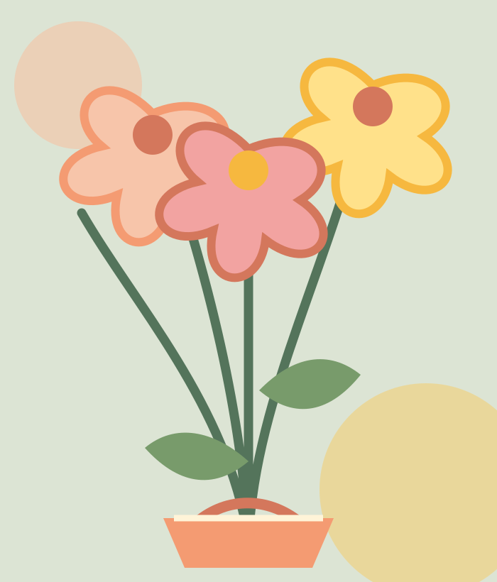

Tiny treasures, made by hand
Colourful things
to keep forever.
Pipe-cleaner flowers and playful little crafts, shaped slowly and made to brighten your shelf.
See the handmade edit
01 Made with happy hands
One of one · Full of colour
Made by hand · Packed with care
The FernStudio edit
Small joys,
made by hand.
Colourful keepsakes, desk friends, and tiny gifts for people who like their everyday a little more cheerful.
Arranging the handmade edit...